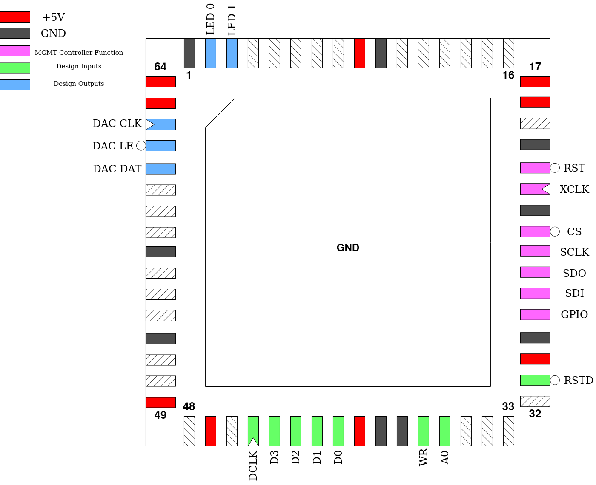

TBB1143
This is yet another one of my Tiny Tapeout 2 designs, but this one is here because the original did not work (I messed up the ring oscillator). So I put it onto this die just out of frustration and just wanting to see this design work.
Additionally, this design was put together almost entirely in Logisim Evolution, which should make it a first for GFMPW.
For more information, see the original repo: tt2-avalonsemi-TBB1143
Pinout
Pin # |
Name |
Type |
Summary |
|---|---|---|---|
|
RSTD |
I |
Active low design reset |
|
A0 |
I |
Selects between address latch and register access for data writes |
|
WR |
I |
Active high Write Enable |
|
D[3:0] |
I |
Data Input |
|
DCLK |
I |
Independent Design Clock |
|
DAC DAT |
O |
Serial Data for external DAC (DAC7611 or similar) |
|
DAC LE |
O |
Active low Latch Enable for external DAC |
|
DAC CLK |
O |
Serial Clock for external DAC |
|
LED [1:0] |
O |
LED Blinkenlights |
Note: unlike the original TBB1143, no ring oscillator is here. DCLK is used to generate both the fast and slow clocks. DCLK rate must be equal to 256 times the desired sample clock and is also what is used when calculating channel frequencies.